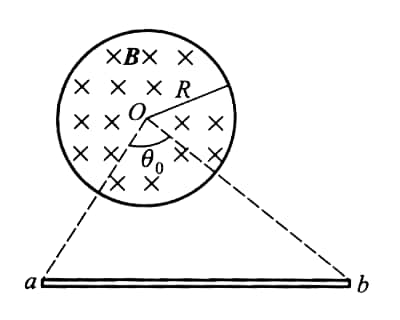
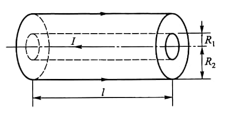
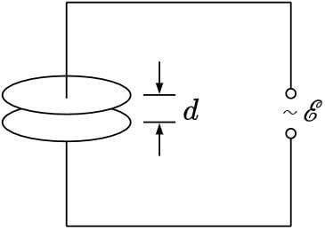

Induction
1
14-3 在半径为 \(R\) 的圆柱形空间内有沿线方向均匀磁场 \(\boldsymbol{B}\)，已知磁感 \(B\) 随时间增加的速率 \(\cfrac{\mathrm{d}B}{\mathrm{d}t}\). 一金属棒 \(ab\) 放在磁场外且垂直于圆柱轴线，两端点 \(a\)、\(b\) 与圆心 \(O\) 点连线 \(ao\) 与 \(bo\) 的夹角为 \(\theta_0\)，求 \(ab\) 中的感生电动势.

Hint
穿过三角形回路 \(aboa\) 的磁通量等于穿过圆心角为 \(\theta_0\)，半径为 \(R\) 的扇形区域的磁通量，即
\[
\varPhi_{aboa} = -BS_{扇} = -\frac{1}{2}R^2\theta_0B,
\]
\[
\mathscr{E}_{aboa} = -\frac{\mathrm{d}\varPhi_{aboa}}{\mathrm{d}t} = \frac{1}{2}R^2\theta_0\frac{\mathrm{d}B}{\mathrm{d}t}
\]
由于 \(ao\) 及\(bo\) 边上的感生电场 \(\boldsymbol{E}\) 处处与 \(ao\) 及 \(bo\) 垂直，故此两边的感生电动势均为零：\(\mathscr{E}_{oa} = 0\)，\(\mathscr{E}_{bo} = 0\). 故有
\[
\mathscr{E}_{ab} = \mathscr{E}_{aboa} = \frac{1}{2}R^2\theta_0\frac{\mathrm{d}B}{\mathrm{d}t},
\]
方向从 \(a\) 到 \(b\).
2
14-16 如图所示，求长为 \(l\) 的一段同轴电缆的自感. 设同轴电缆由半径为 \(R_1\) 的内实心圆柱导体和半径为 \(R_2\) 的外圆筒导体（厚度不计）组成，中间充以绝缘介质，绝缘介质的磁导率为 \(\mu_0\).

3
14-17 如图所示，由两块面积为 \(S = 0.1\mathrm{m^2}\) 的圆形极板组成的电容器连接在电势差 \(\mathscr{E} = \mathscr{E}_m\sin\omega t\) 的电源上，其中 \(\mathscr{E}_m = 200\mathrm{V}\)，而 \(\omega = 200 \mathrm{rad/s}\)，位移电流的最大值为 \(I_d =8.9\times 10^{-6}\mathrm{A}\)，略去极板边缘处的不规则电场，试求两极板之间的距离 \(d\).

Hint
法 1：\(Q = CU\)，两边求导得
\[
i_d = \frac{\varepsilon_0\pi R^2}{d}\frac{\mathrm{d}}{\mathrm{d}t}\mathscr{E} = \frac{\varepsilon_0\pi R^2}{d}\mathscr{E}_m\omega\cos\omega t.
\]
所以
\[
I_d = \frac{\varepsilon_0\pi R^2}{d}\omega\mathscr{E}_m
\]
法 2：
\[
I_d = \frac{\mathrm{d}}{\mathrm{d}t}\varPhi_D = \varepsilon_0\pi R^2\frac{\mathrm{d}}{\mathrm{d}t}E = \frac{\varepsilon_0\pi R^2}{d}\frac{\mathrm{d}}{\mathrm{d}t}\mathscr{E} = ...
\]
思考：如何体现 \(U\) 与 \(I\) 的相位差？
4
14-19 如图所示，电荷 \(+q\) 以速度 \(\boldsymbol{v}\) 向 \(O\) 点运动，电荷到 \(O\) 点的距离记为 \(x\). 以 \(O\) 点为圆心作一个半径为 \(a\) 的圆，圆面与 \(\boldsymbol{v}\) 垂直. 试计算通过此圆面的位移电流.

Hint
法 1: 在圆面上积分
\[
\begin{aligned}
I_d &= \frac{\mathrm{d}}{\mathrm{d}t}\varPhi = \varepsilon_0 \frac{\mathrm{d}}{\mathrm{d}t}\int_S \frac{1}{4\pi\varepsilon_0}\frac{p}{d^2}\cos \theta \mathrm{d}S \\
&= \frac{qa^2v}{2(a^2+x^2)^\frac{3}{2}}
\end{aligned}
\]
注意: 由于带有 \(\mathrm{d}/\mathrm{d}t\), 故应对长度积分而非角度.
法 2: 在球面上积分. 球冠高度为 \(r - x\),
\[
S = 2\pi r(r-x), \quad \varPhi = \varepsilon_0 \frac{1}{4\pi\varepsilon_0} \frac{q}{r^2} S.
\]
\[
I_d = \frac{\mathrm{d}}{\mathrm{d}t}\varPhi.
\]
5
14-22 使电容器 \(C\) 在电源 \(\mathscr{E}\) 中充电后立即接至线圈 \(L\) 上. （1）求 \(L\) 中最大电流；（2）求电路能量均分与电容与电感上的时刻.
Hint
(1) 由能量关系, \(I\) 最大时所有能量传导至电感
\[
\frac{1}{2}C\mathscr{E}^2 = \frac{1}{2}LI_m^2.
\]
所以
\[
I_m = \mathscr{E}\sqrt{\frac{C}{L}}
\]
(2) 能量均分时,
\[
\frac{1}{2}CU^2 \times 2 = \frac{1}{2} C\mathscr{E}^2,
\]
所以
\[
U = \frac{\sqrt{2}}{2}\mathscr{E}.
\]
而
\[
U(t) = \mathscr{E}\cos\omega t,\quad \omega = \frac{1}{2\pi\sqrt{LC}},
\]
故
\[
\omega t = (2k+1)\frac{\pi}{4},\ \ k = 0, 1, 2, \cdots
\]
即
\[
t = (2k+1) \frac{\pi^2}{2}\sqrt{LC},\ \ k = 0, 1, 2, \cdots
\]